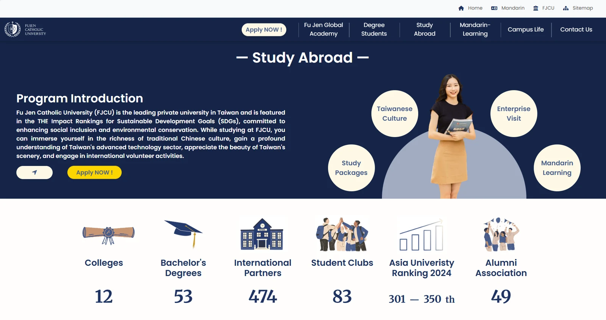
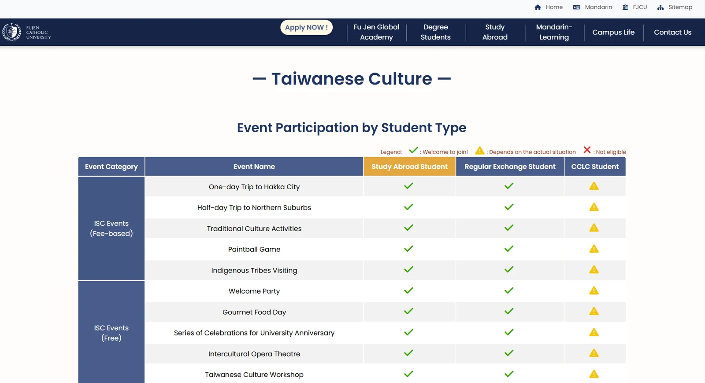
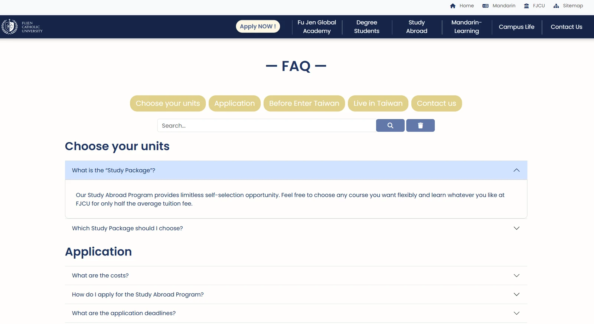

Case 03
Fu Jen University
International Student Portal
Two or three sentences: what international students could not find before, and what this portal made simple
- Role
- PM / SA / UI·UX
- Team
- 4 (1 manager, 2 engineers, me)
- Duration
- Jul 2024–Jan 2025 · 7 months
- Type
- In-house, cross-department
- Users
- International students · international office staff
- Live site
- fujenglobal.fju.edu.tw ↗
Context and problem
How did international students get information before? Scattered across department pages? Chinese only? Word of mouth from seniors? Describe one student’s real predicament
And on the staff side — repeatedly answering the same questions? Email volume?
Skeleton example — replace with the real flow, then delete this line
flowchart LR
A["Before arrival"] --> B["Arrival and registration"]
B --> C["Student life"]
C --> D["Graduation and departure"]
A --> A1["Application and visa"]
B --> B1["Residence permit, insurance, bank account"]
C --> C1["Course selection, housing, part-time work"]
D --> D1["Departure formalities and alumni"]
classDef lPeople stroke-width:1.5px
classDef lEntry stroke-width:1.5px
classDef lLogic stroke-width:1.5px
classDef lData stroke-width:1.5px
classDef lPain stroke-width:2px
class A,B,C,D lEntry
class A1,B1,C1,D1 lData
- Student stage
- Information needed
Hover or tap any node to highlight what it connects to directly
My role
Product owner in a team of four. What set this project apart from the other two was the users: they were not just cross-departmental but cross-cultural and cross-lingual — no prior knowledge of Taiwanese administrative process could be assumed, and no assumption could be made that they read Chinese bureaucratic vocabulary.
How did you run user research? Did you interview international students directly? How was language handled?
Multilingual content governance: who owns translation? How are language versions kept in sync when content changes? This is a textbook SA problem and worth expanding
Key decisions
This section carries the case. Interviewers are not looking for what you did, but for how you chose under incomplete information.
Decision 01
Decision title, e.g. “organise by university department, or by the student’s timeline”
- The fork
- Options and costs
- The call
- Your choice and reasoning
- Trade-off
- What you gave up
Decision 02
Decision title, e.g. “how many languages to support, and how that was decided”
- The fork
- Options and costs
- The call
- Your choice and reasoning
- Trade-off
- What you gave up
Decision 03
Decision title
- The fork
- Options and costs
- The call
- Your choice and reasoning
- Trade-off
- What you gave up
Delivery
Artefacts: information architecture, multilingual content matrix, wireframes, content maintenance process, staff operations manual
What maintenance mechanism did you design for after launch? That is what determines whether the portal is still useful six months later
Skeleton example — replace with the real flow, then delete this line
flowchart TD
P["Portal home"] --> A["Before arrival"]
P --> B["Arrival and residence"]
P --> C["Student life"]
P --> D["Graduation and departure"]
A --> A1["Application process"]
A --> A2["Visa and documents"]
B --> B1["Residence permit"]
B --> B2["Insurance and banking"]
C --> C1["Courses and registration"]
C --> C2["Housing and support"]
classDef lPeople stroke-width:1.5px
classDef lEntry stroke-width:1.5px
classDef lLogic stroke-width:1.5px
classDef lData stroke-width:1.5px
classDef lPain stroke-width:2px
class P lEntry
class A,B,C,D lLogic
class A1,A2,B1,B2,C1,C2 lData
- Entry
- Top-level sections
- Content pages
Hover or tap any node to highlight what it connects to directly

Study Abroad programme page — programme detail and university statistics on one page, so applicants stop piecing information together across sites

Event eligibility matrix — every event against three student categories, turning rules that previously meant asking a staff member into something students can look up

FAQ with categories and search — organised around the questions staff were answering most often
Results
e.g. drop in repeat enquiries to staff
e.g. languages supported / pages consolidated
e.g. sessions since launch
Qualitative results: any specific feedback from students or office staff?
In hindsight
Looking back, where was the cross-cultural research too shallow?
What did this project teach you about not designing from your own assumed knowledge?